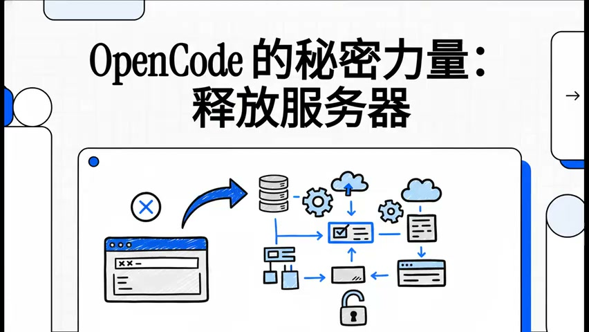

暂无已发布版本，敬请期待。
B 站（含合集/分P/番剧）、YouTube（含字幕）、微信视频号、抖音，统一入口一键解析下载。
转写全文后由 LLM 生成分点式总结，支持任意 OpenAI 兼容模型（含本地/国内大模型）。
时间戳 + 截图 + 章节结构，生成可直接阅读的 Markdown，支持导出 HTML / PDF / JPG 长图。
一键导出到 Obsidian 仓库，使用 wiki-link 格式，笔记与本地知识库无缝衔接。
视频、音频、转写、笔记全部保存在本地，数据完全由你掌控。
自带 ffmpeg / 转写模型 / 解析引擎，安装即用，无需配置环境。
视频内容自动生成结构化笔记：封面、时间戳引用、章节、截图、AI 总结。

不需要。安装包已内置 ffmpeg、转写模型与各平台解析引擎，安装后即可使用。
支持任意 OpenAI 兼容接口（商汤、DeepSeek、通义、Groq 等），可在设置中自由配置 Key 与模型。
视频、音频、笔记全部保存在本地。仅在你使用云转写或云端 AI 总结时，内容会发送至对应服务商。
部分平台（如视频号、抖音）受平台风控限制，按设置页指引填入 Cookie 可获得更稳定的解析成功率。
Markdown、HTML、PDF、JPG 长图，以及直接导出到 Obsidian 仓库。